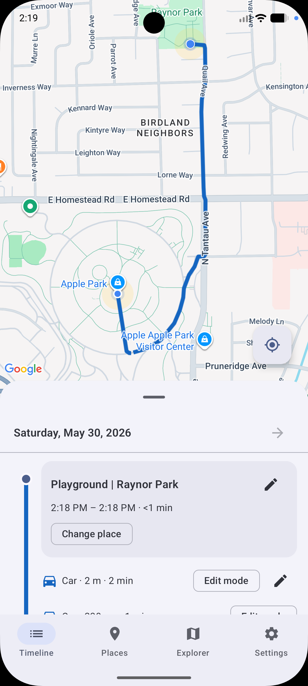

Timeline and map
See visits, routes, and transport segments by day, with tools to split or reclassify activity when needed.
Location History
A private, on-device timeline of the places you visit and the trips between them. No account, no cloud profile, and your location history stays on your phone.

What it does
See visits, routes, and transport segments by day, with tools to split or reclassify activity when needed.
Pathline uses motion signals and geofencing so GPS can focus on the moments when you are moving.
Confirm and refine the places you visit so your personal timeline becomes easier to browse over time.
Back up your timeline, places, and trained models to a folder you choose, with optional password or passkey encryption.
Privacy first
Pathline stores your location history locally on your Android device. It does not require an account and does not sell your data. Network access is used for map and place features, and backups are written only to storage locations you choose.
Privacy Policy